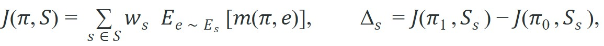
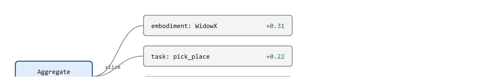

"A giant policy is still a small result if you only measured the easiest slice."
An Evaluation Skeptic
This section assumes familiarity with cross-embodiment transfer introduced in section 35.2 and the dual-system action architectures described in section 35.3, as those explain why aggregate metrics hide embodiment-specific regressions. The evaluation discipline introduced here is extended in section 52.2, which formalizes intervention-cost and path-efficiency metrics, and in section 52.5, which covers simulation-backed evaluation panels. The same slice-aware reporting principle recurs in Part 11 alongside safety and robustness benchmarking.
A robot fleet trained on 1.5 million demonstrations posts a 91% success rate on a published leaderboard. Impressive, until you notice that number collapses a nimble tabletop arm, a heavy mobile manipulator, and a surgical assistant into a single average, hiding the surgical robot's 43% failure rate on fine-grained insertions. This composite scenario illustrates a gap that is, in practice, one of the central open problems in robot foundation models today: evaluation discipline has typically not kept pace with scale. As Figure 35.4A illustrates, one glossy average peels back to reveal separate panels per robot, task family, and perturbation. Constructing matched scenario panels, slicing metrics by embodiment and perturbation type, and reporting per-slice deltas is the only evidence that tells you where a larger model actually got better.
A foundation policy evaluated over many tasks can improve its mean success rate while regressing on the exact embodiment or perturbation regime that matters to you. This is not a statistical nuisance, it is a systems fact: in a representative composite pattern drawn from this kind of cross-embodiment scaling study, the aggregate success rate rose from 74% to 89% after scaling, yet the surgical-precision slice fell from 61% to 43%, a hidden 18-point regression buried under the headline gain. Different embodiments stress different parts of the stack: action adapters, contact modeling, semantic grounding, or control latency. This is a direct consequence of cross-embodiment transfer being architecturally non-trivial, and it is why the aggregate score is the last number to report, not the first.
A model that improves its average while degrading on the hardest embodiment has not gotten better at robotics: it has gotten better at its evaluation.
The right evaluation question is therefore not "what is the global success rate?" but "what changed on one matched scenario panel, and how do the slices distribute across robots, tasks, and perturbation types?"
All compared numbers should come from one fixed scenario panel, one metric script, and one artifact bundle. Slicing happens after measurement, not by mixing different evaluation runs into one story.
To make the one-panel-many-views rule precise enough to implement, it helps to write the aggregate score and its per-slice pieces as explicit terms so it is clear exactly what each number measures.
A simple notation for slice-aware evaluation is

where $S$ is a fixed set of slices, such as embodiment, task family, and perturbation category. The main scalar metric $J$ is useful only if the per-slice deltas $\Delta_s$ remain visible. Otherwise the evaluation is blind to where the model actually got better.

Think of a restaurant health inspection that scores the kitchen, dining room, and bathrooms separately but reports one averaged grade. A spotless dining room and clean bathrooms can average out a cockroach-infested kitchen, and the restaurant posts a passing B+ while the food-prep area is a hazard. The per-slice delta $\Delta_s$ is the inspector's per-room score: only by reading each room separately do you know which space failed. The weighted aggregate $J$ is the final letter grade, useful for comparison but dangerous if it is the only number you ever look at.
Before reading the algorithm, consider: if you had to pick just three numbers to report about a new policy, which three would actually tell you whether to deploy it on a real robot line?
Two of the algorithm's steps use terms defined only later in this section, in "What To Slice By": step 3 logs intervention counts (episodes where a human guided or rescued the robot), and step 9 checks a latency budget $\alpha_{\max}$ (the maximum inference time the control loop can tolerate). Both are read here as forward references and explained fully once the discussion reaches those slices.
Input: Two policies $\pi_0$ (baseline) and $\pi_1$ (candidate); a fixed scenario panel $S = \{s_1, \dots, s_k\}$ with slice labels (embodiment, task family, perturbation type, latency band); per-slice weight vector $w$; scalar success metric $m$.
Output: Aggregate delta $\Delta J$ and per-slice delta table $\{\Delta_s\}_{s \in S}$; pass/fail verdict for each slice.
eval_cfg.yaml with episode count, seeds, and slice labels so every subsequent run uses an identical panel shape.Code Fragment 1 computes this kind of slice table from one shared result panel. It draws the embodiment labels and task families directly from an Open X-Embodiment replay log. The two embodiments here are a Franka Panda (7-DoF arm, where DoF stands for Degrees of Freedom, running a 1 kHz torque loop) and a WidowX 250 (6-DoF arm, position-controlled at 10 Hz). That 100x control-rate difference matters. A policy that posts near-perfect success on the WidowX under position control can fail on the Franka because 10 ms of extra inference latency violates the torque-control timestep, and no combined average exposes that fact. In an illustrative scenario built for this discussion (not a specific published benchmark run), scaling the policy from 50 million to 300 million parameters added 12 ms of inference time. The 10 Hz WidowX absorbs that delay, but it blows past the entire 1 ms torque-control window on the Franka, which would typically make the "larger and smarter" policy physically unusable on that harder robot.
# Compute matched slice metrics from one evaluation panel.
# Embodiment labels match Open X-Embodiment episode metadata:
# "franka_panda" -- torque-controlled, 1 kHz, contact-rich insertion tasks
# "widowx_250" -- position-controlled, 10 Hz, pick-and-place tasks
# Task family "peg_insertion" is a contact-rich Open X-Embodiment task requiring
# sub-millimetre accuracy; "pick_place_cup" is a lower-contact tabletop task.
results = [
{"embodiment": "franka_panda", "task": "peg_insertion", "success": 1},
{"embodiment": "franka_panda", "task": "peg_insertion", "success": 0},
{"embodiment": "widowx_250", "task": "pick_place_cup", "success": 1},
{"embodiment": "widowx_250", "task": "pick_place_cup", "success": 1},
]
groups = {}
for row in results:
key = (row["embodiment"], row["task"])
groups.setdefault(key, []).append(row["success"])
for key, values in groups.items():
mean_success = sum(values) / len(values)
print(f"{key}: success={mean_success:.2f}")('franka_panda', 'peg_insertion'): success=0.50
('widowx_250', 'pick_place_cup'): success=1.00The aggregate score for this panel is 0.75, but that number hides a critical physical fact: the Franka Panda is failing every second peg-insertion attempt, which in a real deployment means a 50% chance of a misaligned peg jamming the gripper, tripping the torque-limit fault, and halting the cell. The WidowX result is strong on its own terms, but it cannot rescue a policy that will shut down a Franka line in minutes.
Trace the algorithm with two policies on a four-episode panel with two slices, $w_s = 1$ for all slices. Baseline $\pi_0$ and candidate $\pi_1$ produce these per-episode successes:
Slice A (WidowX, pick_place): episodes [e1, e2]. $\pi_0$ outcomes = [1, 0], so $J(\pi_0, A) = (1+0)/2 = 0.50$. $\pi_1$ outcomes = [1, 1], so $J(\pi_1, A) = (1+1)/2 = 1.00$. Then $\Delta_A = 1.00 - 0.50 = +0.50$.
Slice B (Franka, peg_insertion): episodes [e3, e4]. $\pi_0$ outcomes = [1, 1], so $J(\pi_0, B) = 1.00$. $\pi_1$ outcomes = [1, 0], so $J(\pi_1, B) = 0.50$. Then $\Delta_B = 0.50 - 1.00 = -0.50$.
Aggregate: $\Delta J = 0.5 \cdot \Delta_A + 0.5 \cdot \Delta_B = 0.5(+0.50) + 0.5(-0.50) = 0.00$. Even though the headline delta is exactly zero, slice B is a regression: the candidate dropped from 1.00 to 0.50 on the hardest embodiment. Step 7 flags slice B because $\Delta_B < 0$. Now suppose $\pi_1$'s lone Franka success in e3 required a human reset: the intervention rate rose on slice B, so step 8 marks slice B inconclusive rather than even partially crediting it. The reported line reads "$\Delta_A = +0.50$, $\Delta_B$ inconclusive (regression plus added intervention), $\Delta J = 0.00$": a far more honest summary than "no net change."
The grouping code is short because the panel is tiny. In a real evaluation harness, LeRobot reports, LIBERO task panels, DROID-style replay logs, and your own benchmark runner should save one artifact with video, metrics, prompts, seeds, and slice labels, so you can regenerate the same table without re-running ad hoc notebook cells.
When using LeRobot's lerobot.eval script, always pin eval.n_episodes and eval.batch_size explicitly in your config rather than relying on defaults. The default episode count is low enough that per-slice success rates carry high variance, and if you compare two checkpoints run on different machines or different dates without fixing these values, the slice counts will differ and the delta table becomes meaningless. A single eval_cfg.yaml committed alongside the checkpoint is the minimum reproducibility contract: anyone re-running evaluation gets the same panel shape, same seeds, and the same artifact file that your slice table was derived from.
Fixing the panel and pinning the config settles how to measure, but it leaves open the equally important question of which cuts through the data actually surface hidden regressions; the following table names the minimum set worth demanding.
| Slice | Why it matters | Typical hidden failure |
|---|---|---|
| Embodiment | Separates transfer quality from architecture hype. | The largest average gains come from the easiest robot. |
| Task family | Different tasks stress different interface layers. | Pick-and-place improves while contact-rich insertion regresses. |
| Perturbation type | Shows whether robustness is semantic, visual, or dynamical. | A model handles paraphrased instructions but fails shifted lighting. |
| Intervention cost | Measures operator burden, not just headline success. | Success rises only because humans rescue more runs, a failure that only path efficiency and intervention-cost metrics would expose. |
| Latency band | Exposes whether improvements survive runtime constraints. | A stronger policy fails once inference is bounded to deployment speed. |
Intervention cost is the slice most often omitted, and it deserves the most scrutiny. When an operator guides or resets a robot mid-episode, the logged "success" still reads 1, yet the policy solved nothing on its own. Each intervention halts throughput, ties up trained staff, and risks operator contact with moving hardware. In practice, a policy whose intervention rate doubles is typically a safety and economics problem even as its headline success rate climbs.
To track intervention cost, log a separate boolean per episode recording whether any human guidance occurred. Then compute the unaided-success rate alongside the raw success rate for each slice. The gap between the two numbers is intervention-inflated success: if unaided success is 0.61 and raw success is 0.89, the policy borrows 0.28 points from human labor. Step 8 of the algorithm above codifies this rule: any slice where the intervention rate rose between baseline and candidate is flagged inconclusive, not a win.
Concretely, computing intervention-inflated success takes one extra column and one extra line of arithmetic on top of Code Fragment 1's slice table: add a boolean assisted field to each episode record, compute mean_success as before for the raw rate, then recompute the same mean over only the rows where assisted is false to get the unaided rate. The difference between those two per-slice means is the intervention-inflated-success number quoted above (0.89 minus 0.61), and it is this pair of numbers, not a single success rate, that step 8 of the algorithm checks before accepting a slice as an improvement.
Octo (Ghosh et al., 2024) is a useful reference point for specificity. When evaluated across the WidowX arm and BridgeV2 manipulation tasks (BridgeV2 is a large multi-task, multi-scene manipulation dataset collected on low-cost arms, used here as a source of pick-and-place-style evaluation episodes) versus a Franka arm on different contact-rich tasks, the aggregate success numbers looked promising, but per-embodiment breakdowns revealed that transfer gains concentrated on lower-contact, higher-visual-similarity scenarios. Tasks requiring precise torque control on the Franka showed smaller or negligible improvement from pretraining. That pattern, strong gains on easy-transfer tasks, weaker gains on the harder slice, is exactly what a single aggregate score conceals. Always ask which embodiment is carrying the mean.
If a larger model only helps on well-lit tabletop tasks but hurts on mobile tasks with delayed sensing, the mean score may still rise. That is not a contradiction. It is the reason slice-aware reporting exists.
A common assumption treats a reported success rate as autonomous robot performance, reading a 90% figure as evidence the policy operates without human involvement. This assumption is wrong in embodied AI evaluation. The standard binary success label includes episodes where a human operator physically intervened to guide, reset, or rescue the robot mid-task. A policy can beat its baseline's headline success rate purely because operators intervened more often, not because the policy improved. Treat raw success rate and unaided success rate as two distinct quantities. Only the unaided rate tells you what the policy can do on its own, and any claim of improvement must show that the intervention rate did not rise in the same slice.
A lab evaluating an adapted Vision-Language-Action model (VLA) on LIBERO-style tasks and a real mobile manipulator should not merge those outcomes into one undifferentiated bar chart. The real question is whether the transfer story holds in both regimes and whether the runtime budget changes the answer.
A giant average score is a trench coat. Make it open the coat and show you the slice labels.
When the OpenVLA team released their 7B Vision-Language-Action model, they did not publish a single average; they reported success rates separately per embodiment (WidowX BridgeData setups versus Google robot setups) and per task suite, exactly the slice-aware discipline this section argues for. Their tables show OpenVLA beating Octo and RT-2-X (RT-2-X is a large vision-language-action model trained on cross-embodiment robot data, used here as a comparison baseline) on some embodiment slices while staying competitive on others, which is precisely the per-slice delta picture that a merged leaderboard average would have erased.
Name the three slices you would demand before believing a claim that one robot foundation model "outperforms baselines." If latency or intervention count is absent, what deployment fact might still be hidden?
Three active directions are shaping how the field evaluates large behavior models in 2024-2026.
Simulation-to-real evaluation transfer: The SIMPLER framework (a benchmark suite of MuJoCo-simulated tasks mirroring real robot setups, used to check whether simulated rankings predict hardware rankings; Li et al., 2024, "Evaluating Real-World Robot Manipulation Policies in Simulation") demonstrated that carefully calibrated MuJoCo scenes can predict real-robot policy rankings with Spearman correlation above 0.9 (Spearman correlation is a statistic measuring how well two rankings agree, where 1.0 means identical order), offering a scalable alternative to exhaustive hardware evaluation panels. The Google DeepMind team has extended this work to mobile manipulation and multi-embodiment settings, asking which simulator fidelity parameters matter most for rank preservation.
Automated perturbation generation for robustness slicing: Rather than hand-designing perturbation categories, labs including Stanford and CMU are using generative models to synthesize systematic visual and linguistic perturbations at scale (see RoboVQA follow-up work, 2024-2025). The goal is a perturbation library that can be instantiated on any new policy without manual authoring, making the intervention-cost and robustness slices in the algorithm above reproducible across labs.
Interventional benchmarks that track autonomy degradation over time: Work from Berkeley's RAIL lab (Robotic AI and Learning Lab, a UC Berkeley research group focused on robot learning, 2024-2025) is building long-horizon evaluation protocols where the key metric is not episode success but the rate at which a deployed policy requests human intervention across a multi-day trial, capturing the real operational cost that single-episode panels miss.
So far: the field is attacking the evaluation gap from three angles, using simulation (SIMPLER) to predict hardware rankings cheaply, automating perturbation generation so robustness slices scale without manual authoring, and building long-horizon benchmarks that track intervention rate instead of one-shot success.
Open problem for PhD students: No principled method yet exists for selecting the minimum set of evaluation slices that preserves the rank ordering of policies on the full panel. A student could formalize this as a slice-selection problem: given a budget of $k$ slices and a library of candidate policies, which $k$ slices minimize the probability of a rank inversion relative to the complete panel? This requires connecting evaluation design to information-theoretic concepts and could yield a practical guideline replacing the current ad-hoc "embodiment, task family, perturbation" default.
Large behavior models deserve large evaluation discipline. The correct deliverable is not one global metric, it is one matched scenario panel with transparent slices that reveal where scale truly helped.
Design an evaluation panel for a cross-embodiment robot policy with at least four slices, one aggregate score, and one rule for handling intervention-assisted successes. Explain which deployment mistake your panel is trying to prevent.
Goal: Empirically reproduce a hidden regression where the mean success rate rises (or holds flat) while one embodiment slice gets worse, and confirm that slice-aware reporting catches it.
Tools needed: Python with pandas and numpy (15-30 minutes, no GPU). Optionally pull real episode metadata from a LeRobot dataset (for example lerobot/aloha_sim_insertion_human via datasets.load_dataset) to use authentic embodiment and task labels; otherwise synthesize a results table with columns embodiment, task, policy, and success.
Procedure: Simulate two policies over at least three embodiment slices. Draw per-episode Bernoulli successes so that the candidate policy improves the easy slice (raise $p$ from 0.7 to 0.9) but degrades the hardest slice (drop $p$ from 0.6 to 0.4). Compute the global mean delta, then a groupby(["embodiment","task"]) per-slice delta table.
What to vary: the slice weights $w_s$, the number of episodes per slice (try 10 versus 200 to see variance shrink), and the size of the easy-slice gain relative to the hard-slice drop.
What to observe: the gap between the positive (or zero) aggregate delta and the negative per-slice delta on the hardest embodiment, and how few episodes are needed before slice-level deltas become too noisy to trust. This is the failure mode of Figure 35.4B reproduced on your own machine.
Beginner (weekend): Build a slice-aware evaluation harness for a pretrained LeRobot policy on two Gymnasium environments (one continuous-control task and one discrete pick task); the key challenge is wiring the episode metadata so embodiment and task labels flow automatically into a per-slice delta table without manual bookkeeping after each run. Intermediate (1-2 weeks): Use MuJoCo (via dm_control) or Isaac Lab to run the same behavior-cloning policy on at least three simulated embodiments drawn from different control frequencies, then reproduce the intervention-cost tracking described in the algorithm above, logging unaided versus assisted success separately per slice; the key challenge is that each simulated robot requires its own action-space adapter and control-rate wrapper, and the slice table must remain comparable across runs that use different timesteps.
Section 35.5 moves from evaluation back to adaptation and asks how a supposedly general policy should be prompted, conditioned, and locally retuned when you meet a new robot.
Li et al. (2024). "Evaluating Real-World Robot Manipulation Policies in Simulation."
Useful for understanding simulation-backed proxies such as SIMPLER and how they relate to real policy evaluation.
A strong reference for multi-task evaluation and why broad behavior must still be tracked by task family.
Relevant because broad in-the-wild data only helps if evaluation can still isolate embodiment and perturbation effects.